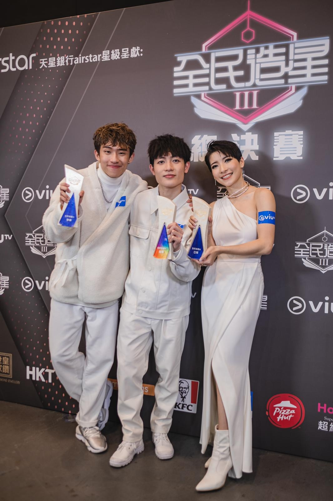
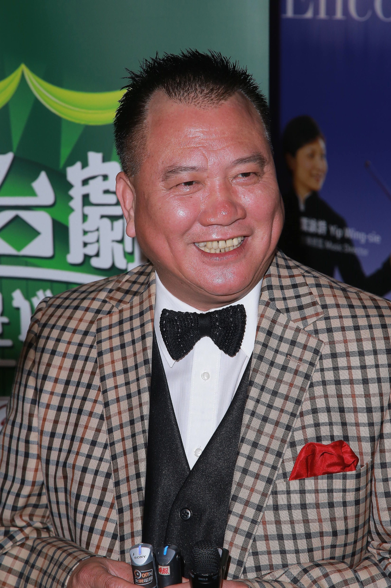

ViuTV《全民造星3》由播出到昨晚總決賽，一直是城中熱竹節目，最終十強以香港跳折骨舞數一數二的阿Ben(趙祥誠)成為冠軍得主，大熱的陳葦璇及Ansonbean(陳毅燊)以接近票數屈居亞、季軍。
自言一向沒自信，甚至曾被人睇死:「跳折骨舞行唔到好遠」難出頭的阿Ben總算吐氣揚眉，以實力表現成為《造星3》得主，23歲的阿Ben隨即被起底，雖然他講得獎感受時，提到感激家人支持，及母親獨力養大五個仔女，但有讀者報料，指單親的阿Ben家境富裕，住元朗四季名園獨立屋，出入有司機，他亦有寶馬房車代步，從商的母親與藝人萬梓良是世交，二人兄妹相稱。
- 折骨Ben在《全民造星3》總決賽表現穩定，憑著在獨特舞技成為贏家。

- Ben雖家境富裕，但讀書成績不好的他，一直缺乏自信，就算贏了冠軍一刻，仍未相信自己是勝利者。
 - 折骨Ben跟亞軍陳葦璇及季軍大熱Ansonbean，三個所得的票數其實相當接近。
 - Ben從商的母親，跟藝人萬梓良屬世交，兄妹相稱，故萬子稱呼Ben做世姪。
柴米無憂，Ben媽任由子女發展自己興趣，排行第二的阿Ben在不愁生活下，專心鑽研舞技，雖然有富媽媽作後盾，但性格內斂害羞的阿Ben，一直把富家子身份低調，並且有開班教跳舞賺零用，不想攤大手板只靠屋企。
昨晚陪著他現身總決賽的大家姐Elaine(趙綺婷)，原來亦有來頭。Elaine有香港城市畫家之稱，畫無數以香港建築物為題材的作品，16年開過個人畫展「ON MY WAY」，又曾獲邀為香港駐紐約經濟貿易，作藝術交流。
家姐Elaine跟細佬一樣，有藝術天份之餘，對娛樂圈同感興趣，去年Elaine參選港姐，希望透過選美入行，不過樣貌平庸的Elaine，在第一輪面試失敗，未能入圍。
若非家底有番咁上下實力，趙家兩位藝術子女，又怎能藝術當飯食。
至於季軍Ansonbean，同樣有家底，其母是曾當跳舞老師，開三間跳舞學校的林佩佩，也是當年李珊珊及歐陽妙芝參選港姐的提名人，Ansonbean昨晚完了比賽，便乘的士返回九肚山豪宅。
- 被稱為香港城市畫家的Elaine，於16年開過個人畫展「ON MY WAY」。
- 富家子阿Ben住獨立屋，有司機，家中有畫室供家姐畫畫。